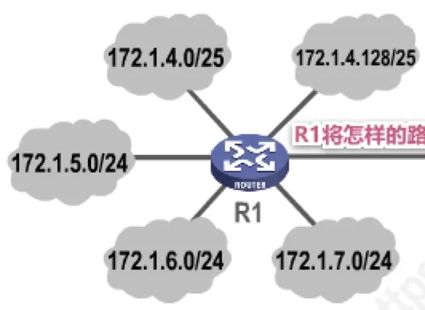
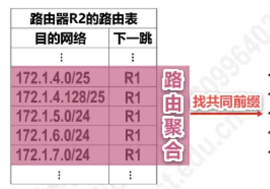

计算机通信与网络 · 第 4 章 网络层
4.3.4 无分类编址的IPv4地址
划分子网只是缓解了地址紧张，并没有解决根本问题：C 类网地址空间太小、大量地址被闲置，而 IPv4 地址仍在加速消耗。1993 年 IETF 提出无分类编址，彻底取消了 A、B、C 类的界限，用「网络前缀 + 斜线记法」灵活地划分地址块。这一节讲清 CIDR 的记法、怎样由一个地址求出整个地址块的全部细节，以及路由聚合与最长前缀匹配这两项由此而来的重要技术。
1. 为什么需要无分类编址
划分子网在一定程度上缓解了因特网在发展中遇到的困难，但是数量巨大的 C 类网因为其地址空间太小，并没有得到充分使用；而因特网的 IP 地址仍在加速消耗，整个 IPv4 地址空间面临全部耗尽的威胁。
为此，因特网工程任务组 IETF 提出了采用无分类编址的方法来解决 IP 地址紧张问题，同时还专门成立 IPv6 工作组，负责研究新版本 IP 以彻底解决 IP 地址耗尽问题。1993 年，IETF 发布了无分类域间路由选择 CIDR（Classless Inter-Domain Routing）的 RFC 文档：RFC 1517～1519 和 1520。CIDR 带来两个根本性的变化：
- CIDR 消除了传统的 A 类、B 类和 C 类地址，以及划分子网的概念——地址不再按类别分配，网络号与主机号的分界由网络前缀的长度直接给出；
- CIDR 可以更加有效地分配 IPv4 地址空间，并且可以在新的 IPv6 使用之前允许因特网的规模继续增长。
2. 斜线记法与 CIDR 地址块
CIDR 使用斜线记法，或称 CIDR 记法：在 IPv4 地址后面加上斜线「/」，在斜线后面写上网络前缀所占的比特数量。例如 128.14.35.7/20 表示网络前缀占用 20 比特，剩下的主机编号占用 32 − 20 = 12 比特。
有了这个记法，网络号和主机号的分界就完全由前缀长度决定，不再受类别限制——「/20」既不属于 A 类也不属于 B 类，这就是「无分类」的含义。CIDR 实际上是把网络前缀都相同的连续 IP 地址组成一个「CIDR 地址块」。它的好处是：只要知道地址块中的任何一个地址，就可以知道该地址块的全部细节——
- 地址块的最小地址；
- 地址块的最大地址；
- 地址块中的地址数量；
- 地址块聚合某类网络（A 类、B 类或 C 类）的数量；
- 地址掩码（也可以继续称为子网掩码）。
3. 求出一个 CIDR 地址块的全部细节
求法的关键是把地址写成二进制，看清哪些位是网络前缀、哪些位是主机号：把主机号全部取 0 得到最小地址，全部取 1 得到最大地址，其余量值由此推出。原讲义给出了一个例子和一个练习。
（1）例：128.14.35.7/20
网络前缀 20 比特、主机号 12 比特。把地址写成二进制：128.14.00100011.00000111，其中前 20 位是网络前缀。于是最小地址为 128.14.00100000.00000000，即 128.14.32.0；最大地址为 128.14.00101111.11111111，即 128.14.47.255；地址数量为 232−20 = 4096 个；聚合 C 类网数量为 232−20−8 = 16 个（一个 C 类网含 28 = 256 个地址）；地址掩码为 11111111.11111111.11110000.00000000，即 255.255.240.0。
（2）练习：206.0.64.8/18
同样地，网络前缀 18 比特、主机号 14 比特。最小地址为 206.0.64.0；最大地址为 206.0.127.255；地址数量为 232−18 = 16384 个；聚合 C 类网数量为 232−18−8 = 64 个；地址掩码为 11111111.11111111.11000000.00000000，即 255.255.192.0。
| 地址块细节 | 128.14.35.7/20 | 206.0.64.8/18 |
|---|---|---|
| 网络前缀比特数 / 主机号比特数 | 20 / 12 | 18 / 14 |
| 最小地址 | 128.14.32.0 | 206.0.64.0 |
| 最大地址 | 128.14.47.255 | 206.0.127.255 |
| 地址数量 | 232−20 = 4096 | 232−18 = 16384 |
| 聚合 C 类网数量 | 232−20−8 = 16 | 232−18−8 = 64 |
| 地址掩码 | 255.255.240.0 | 255.255.192.0 |
原讲义还用 2011 年的一道真题检查对地址块的理解：在子网 192.168.4.0/30 中，能接收目的地址为 192.168.4.3 的 IP 分组的最大主机数是——A. 0，B. 1，C. 2，D. 4。答案是 C。理由是：192.168.4.0/30 有 30 比特网络前缀、2 比特主机号，整个地址块只有 4 个地址；最小地址 192.168.4.0 作为网络地址，最大地址 192.168.4.3 作为广播地址，中间可分配的地址只有 192.168.4.1 和 192.168.4.2 两个。目的地址 192.168.4.3 正是该子网的广播地址，所以能接收这个分组的最大主机数是 2。
4. 路由聚合（构造超网）
CIDR 的第二个价值体现在路由表上。看原讲义举的例子：路由器 R1 连接着 172.1.4.0/25、172.1.4.128/25、172.1.5.0/24、172.1.6.0/24、172.1.7.0/24 五个网络，它要把这些路由信息通告给相邻的路由器 R2（图 1）。

如果 R1 把这 5 条路由记录都通告给 R2，R2 的路由表就要多出 5 条记录，下一跳都指向 R1：
| 目的网络 | 下一跳 |
|---|---|
| 172.1.4.0/25 | R1 |
| 172.1.4.128/25 | R1 |
| 172.1.5.0/24 | R1 |
| 172.1.6.0/24 | R1 |
| 172.1.7.0/24 | R1 |
这 5 条路由的下一跳相同，目的网络又都连成一片，就可以合并。做法是找共同前缀：把 5 个地址的第三、四字节写成二进制，可见前 22 位完全相同——
172.1.00000100.0 （172.1.4.0/25）
172.1.00000100.128 （172.1.4.128/25）
172.1.00000101.0 （172.1.5.0/24）
172.1.00000110.0 （172.1.6.0/24）
172.1.00000111.0 （172.1.7.0/24）
↑ 共同前缀共 22 位于是这 5 条路由可以聚合为一条 172.1.4.0/22，R2 的路由表只需要一条记录就能覆盖这 5 个网络。这种把若干条具体路由合并成一条前缀更短的地址块的做法，称为路由聚合，也叫构造超网——「超网」正是相对于「子网」而言：划分子网是往前缀后面借位、把网络切小，路由聚合则是把前缀缩短、把网络合并起来。

原讲义用 2018 年的一道真题来检验这一方法：某路由表中有转发接口相同的 4 条路由表项，其目的网络地址分别为 35.230.32.0/21、35.230.40.0/21、35.230.48.0/21 和 35.230.56.0/21，这 4 条路由聚合后的目的网络地址为——A. 35.230.0.0/19，B. 35.230.0.0/20，C. 35.230.32.0/19，D. 35.230.32.0/20。答案是 C。按找共同前缀的方法，把第三字节写成二进制：
35.230.001 00000.0 （35.230.32.0/21）
35.230.001 01000.0 （35.230.40.0/21）
35.230.001 10000.0 （35.230.48.0/21）
35.230.001 11000.0 （35.230.56.0/21）
↑ 共同前缀共 19 位4 条路由的前 19 位相同，因此聚合后的目的网络地址为 35.230.32.0/19。
5. 最长前缀匹配
使用 CIDR 后，一个路由器可能同时掌握前缀长短不一的多条路由。这里有一条基本规律：网络前缀越长，地址块越小，路由越具体。因此，若路由器查表转发分组时发现有多条路由可选，就选择网络前缀最长的那条，这称为最长前缀匹配——因为这样的路由更具体，也就能把分组送得更准。这条规则是 CIDR 能够与路由聚合共存的前提：聚合后的短前缀负责「大致方向」，更长的前缀负责「精确位置」，二者配合才不会把分组送错。
本节小结
- C 类地址空间太小、大量闲置，IPv4 地址又被加速消耗，IETF 因此提出无分类编址，并于 1993 年发布 CIDR 的 RFC 文档（RFC 1517～1519、1520），同时成立 IPv6 工作组研究彻底解决地址耗尽的方案。
- CIDR 消除了 A、B、C 类地址和划分子网的概念，能更有效地分配 IPv4 地址空间，并让因特网规模在 IPv6 普及之前继续增长。
- 斜线记法（CIDR 记法）在地址后加「/」和网络前缀比特数，如 128.14.35.7/20；网络前缀相同的连续地址构成 CIDR 地址块。
- 由地址块中任一地址即可求出全部细节：主机号全 0 是最小地址、全 1 是最大地址，地址数量为 2 的「主机号位数」次方，聚合 C 类网数量再除以 28，地址掩码为「前缀个连续 1 后接连续 0」。
- 路由聚合（构造超网）的方法是找共同前缀，可把下一跳相同的多条路由合并成一条更短前缀的地址块，如 5 条路由聚合成 172.1.4.0/22。
- 网络前缀越长，地址块越小、路由越具体；转发时若有多条路由可选，选择网络前缀最长的那条，即最长前缀匹配。